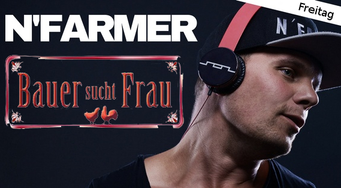
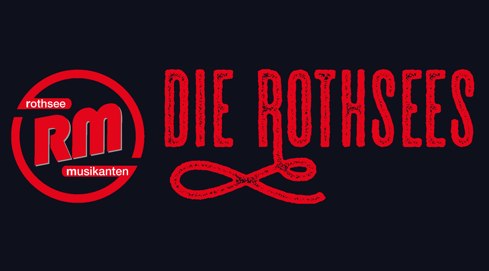

Freitag
16. August 19:30 Uhr: Einlass
21:00 Uhr: Plattenparty mit „DJ N'Farmer“ (Bekannt aus "Bauer sucht Frau")
Samstag
17. August
ca 16:00 Uhr: Aufstellen des Kerwabaums
19:00 Uhr: Stimmungsmusik im Festzelt mit „Fear Beer“
20:30 Uhr: Bieranstich durch 1. Bürgermeister Walter Schnell
Sonntag
18. August
9:30 Uhr: Festgottesdienst
ab 11:00 Uhr: Mittagstisch
13:00 Uhr: Kerwaspiele in und um die Aurach, mit anschließender Siegerehrung
19:00 Uhr: Stimmungsmusik im Festzelt mit den „MP3 Playern“
Montag
19. August 9:30 Uhr: Frühshoppen im Bierzelt mit „G'münder Kirwamusik“
Anschließend: Abfahrt der Kerwaboum zum traditionellen Fäßla suchen
19:30 Uhr: Kerwa-Ausklang mit den „Rothsees“